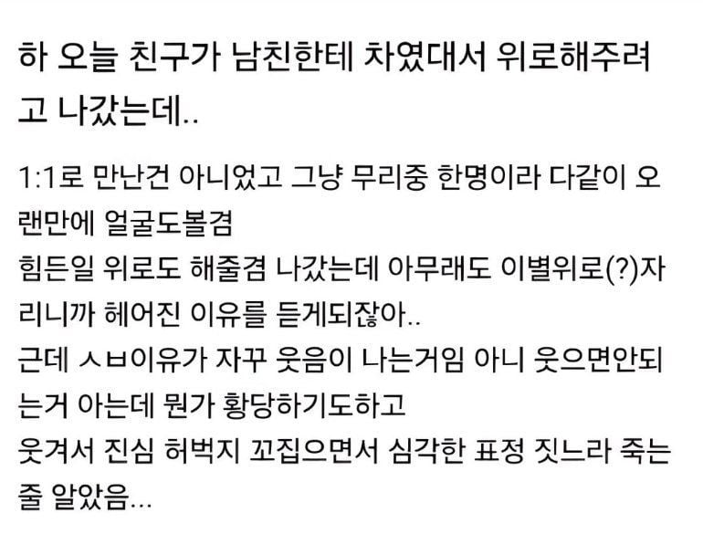
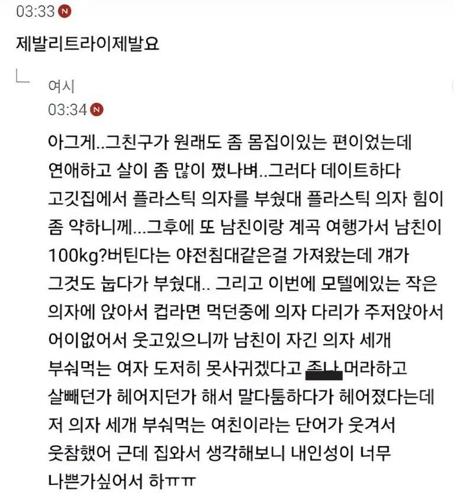

ㅋㅋㅋㅋㅋㅋㅋㅋㅋㅋㅋㅋㅋ
남자친구가 스윗하네...기회도주고
3아웃이면 체인지 해야지..
의자왕
끝이다 무능한놈
ㅋㅋㅋㅋㅋ 니가 더 나빠!!!
필요한건 참을인자 세개가 아니라 버틸의자 세개였구요
ㅋㅋㅋㅋㅋㅋ 웃참 어케햇냐
전남친 수비범위 얼마나 넓었던거냐 ㅅㅂ ㅋㅋㅋㅋㅋㅋㅋㅋㅋㅋㅋㅋㅋㅋㅋㅋㅋ
꼬추 드가나
이건 말포이도 웃겠다
쓰리아웃 ㅋㅋㅋㅋ
살의마 ㅋㅋㅋ

와 백키로하고 어케 만나냐 변태많어
의자3개는 ㅅㅂ ㅋㅋㅋ 관리를 안해도 너무 안한거아니냐 ㅋㅋㅋ

나도 무리
여시하하하하
헤어질 각 잡으려고 나사 하나씩 풀어둔거 아니냐 3연 쾅은 씹ㅋㅋ
100kg여친 무리무리 ;
근데 보면 고기같은거 존나 쳐먹어서 찐게아니라 과자같은거 쳐먹어서 찐 사람들이 대다수더라
밥은 많이 못먹던거 같은데 안움직이고 단거 존나 먹어서 살 존나 찐 사람들 많이봄
물론 케바케긴함
나는 고기도 많이먹고 밥도많이먹고 과자도 많이먹었다
당류 하나도 안먹고 살찐사람이 트루돼지다
당분으로 살찌운 슈가로이더들과는 차원이 다르지
고기 많이 먹어서 살 찐거랑 정제 탄수화물 많이 먹어서 찐거랑 체형보면 좀 다름.
정제 탄수화물 많이 먹어서 찐게 진짜 안 좋음.
세 번 부술 때 까지 기다리는 남친.. 다시는 못만날듯
여자가 70kg넘어가면 문제 있다고 봄
근육질 제외
계속 만났다간 의자꼴 나는건 시간문제임
하나는 의자아니고 침대잖아!
진짜 리브 마냥 살빼면 무조건 떡상할거 같은 미모에 80키로 후반여자 만난적 있는데
내가 120에서 90까지 뺏단 말이야 그래서 같이 운동 하고 복권 긁으면 떡상각이라
열심히 노력 했는데 내가 110키로로 찌더라
ㅅㅂ 먹는데 돈을 아끼지 않더라
참치 맛을 그때 알게 되었다..
삼고체어
세번이나 참았네
ㅋㅋㅋㅋㅋㅋㅋㅋㅋㅋ